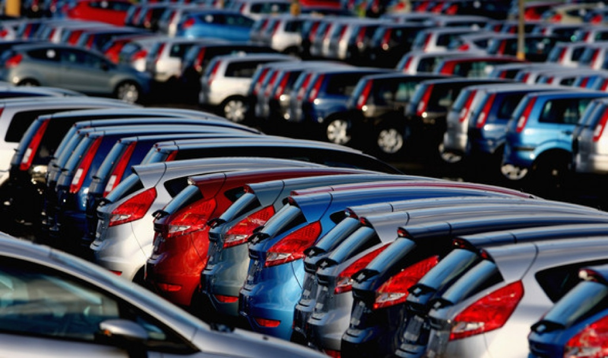

Welcome to Dodgy Motors
Find the best deals wherever you are!

Here at The Car People, we're not your typical used car dealers - visit one of our showrooms in Manchester, Wakefield or Sheffield and you'll soon discover why we're different. Our huge selection of used cars are all hand-picked, vetted by the best, prepared to a standard and priced to give great value.
View Our Deals Now
What is 'approved used?
Approved used cars undergo certain checks before being sold and need to meet specific standards to be sold in approved used schemes.
Why choose 'approved used'?
Approved used cars are typically 'good as new', yet can save you thousands by comparison, often featuring full histories and low mileages
How does it benefit you?
Sold by most reputable dealers, approved used cars give you that extra reassurance and peace of mind when buying a used car.
What do you get?
While schemes vary from dealer to dealer, buyers typically get a 12 month guarantee, breakdown cover and a roadside rescue package.